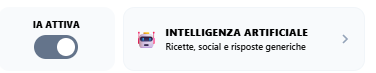
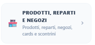
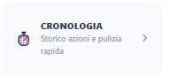
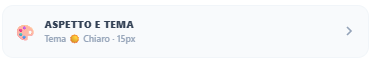
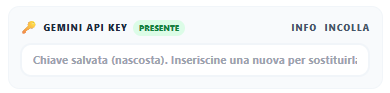

Questa schermata raccoglie le configurazioni principali di LiSA: IA, strumenti di gestione, cronologia e aspetto.
Suggerimento: se modifichi piu impostazioni insieme, verifica il comportamento tornando alla lista principale prima di proseguire.
Puo essere disabilitata, ad esempio se vuoi solamente gestire la lista della spesa senza accedere alle funzioni RICETTA o GENERICA. Questa operazione puo essere effettuata anche utilizzando il pulsante IA presente nella maschera principale di LiSA.

In questa sezione puoi accedere agli archivi dei prodotti registrati, alla configurazione dei reparti, all'individuazione dei negozi in zona, all'attribuzione delle carte fedelta, alla registrazione degli scontrini di acquisto e alla consultazione dell'archivio personale di ricette e appunti.
Qui e anche possibile salvare il proprio codice per la Lotteria degli Scontrini.
Nota editoriale: questa parte resta in formato ridotto perche e un "di cui" del file help principale.
La Lotteria degli Scontrini e un'iniziativa italiana che premia i consumatori con estrazioni legate agli scontrini elettronici emessi dagli esercizi commerciali. Per partecipare, basta registrare il proprio codice fiscale sul sito ufficiale per ottenere un codice lotteria da mostrare all'esercente al momento del pagamento con metodi elettronici (carta o app), generando biglietti virtuali proporzionali all'importo speso (1 biglietto per euro).
Per saperne di piu: lotteriadegliscontrini.gov.it

Qualunque richiesta fatta a LiSA viene tracciata nella cronologia: qui puoi mantenere le richieste piu interessanti e utili, cancellarle oppure riutilizzarle sottoponendole di nuovo a LiSA.

Puoi modificare i colori, la dimensione generale del font caratteri e la trasparenza dell'immagine di sfondo del programma.

Il programma puo funzionare anche senza intelligenza artificiale, ma con limitazioni importanti. La tabella seguente riassume cosa cambia con IA attiva o disattiva.

| Attivita | Con IA | Senza IA |
|---|---|---|
| Inserimento in lista dei prodotti | Si, dettatura libera (il programma capisce che si tratta di una lista). | Si, prodotti separati da virgola o dal separatore "e". |
| Attribuzione dei prodotti ai reparti | Si, automatica. | Si, manuale (per ogni prodotto viene richiesto il reparto di destinazione). |
| Spunta dei prodotti acquistati | Si | Si |
| Ricerca di ricette | Si, con possibilita di copiare in lista gli ingredienti e salvare le ricette in archivio personale. | No |
| Interrogazione libera | Si, con possibilita di salvare le risposte negli appunti personali. | No |
| Utilizzo della macchina fotografica per registrare un prodotto | Si | No |
| Dettatura libera con il microfono | Si | Si, ma ogni richiesta viene interpretata come LISTA. |
| Gestione economica (confronto tariffe da scontrini) | Si | Si, se ci sono prodotti gia in archivio, ma non elabora nuovi scontrini. |
| Riconoscimento negozio/supermercato da geolocalizzazione | Si | Si, ma non attribuisce automaticamente nuove carte fedelta. |
| Utilizzo carte fedelta in pagamento | Si | Si |
| Recupero ricette o appunti dall'archivio personale | Si | Si, solo se gia presenti in archivio. |
| Riutilizzo richieste da cronologia | Si | Si |
| Utilizzo codici Lotteria Scontrini | Si | Si |
| Utilizzo carte fedelta | Si | Si |
| Registrazione negozi/supermercati preferiti | Si | Si, ma la carta fedelta va applicata manualmente in caso di nuovi negozi. |
Configurare l'API Key Google Gemini richiede pochi minuti, ma e fondamentale per sfruttare al massimo LiSA.
Guida rapida: apri la pagina API Key
Per dettagli operativi specifici puoi aprire direttamente i manuali dedicati.